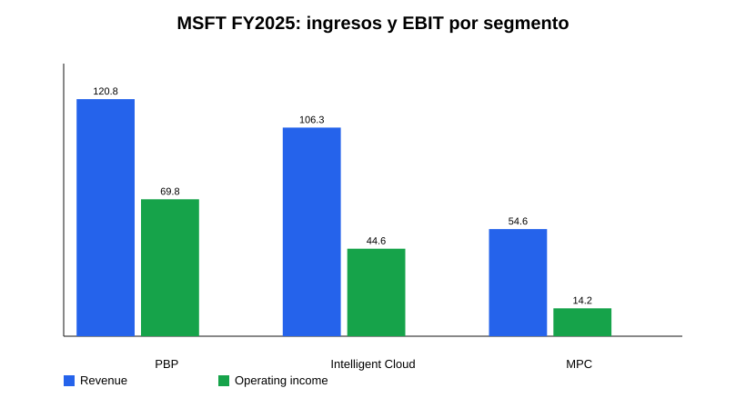
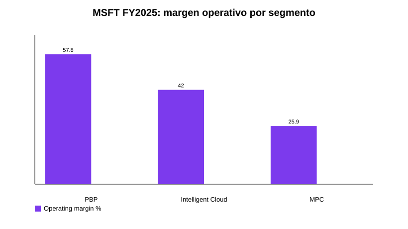
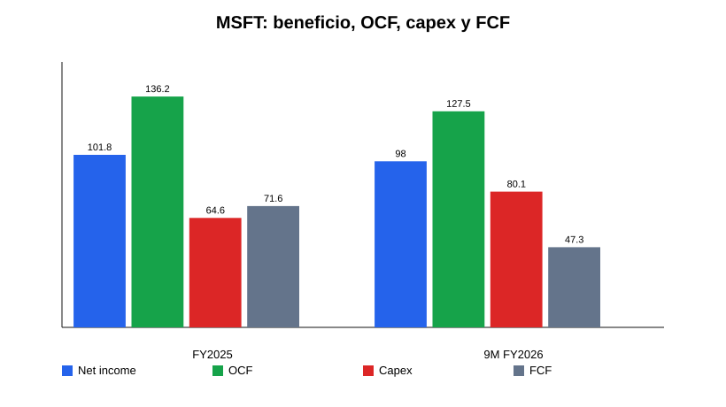
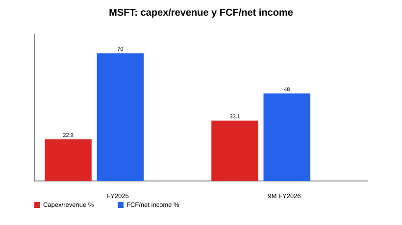
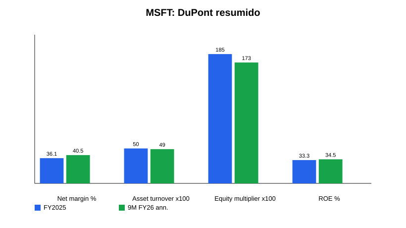
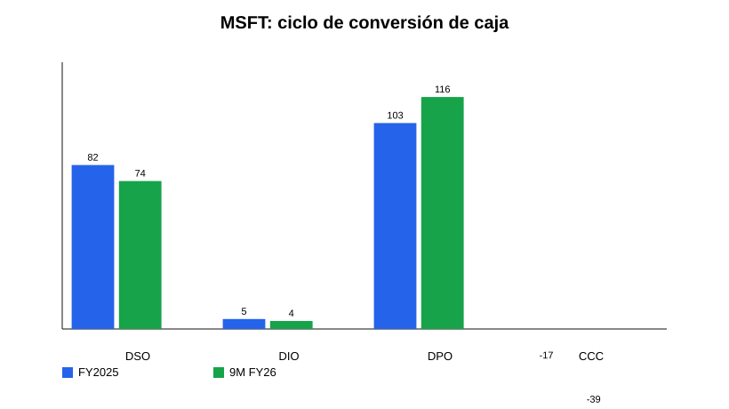

Tipo de documento: Research pre-valoración
Estado: v1 metodológico, no tesis final ni recomendación
Fecha de corte: 13-may-2026
Objetivo: condensar filings, earnings, call, guidance, financials y noticias/material reciente en una pieza previa al modelo de valoración.
Microsoft sigue siendo una de las compañías de mayor calidad económica dentro del software global: escala extraordinaria, distribución enterprise única, ingresos recurrentes, márgenes elevados, balance net cash y una conversión de beneficio a caja operativa muy superior a la media. La lectura central del research no es si el negocio actual es bueno —lo es—, sino si el nuevo ciclo de inversión en AI/cloud mantiene o degrada la calidad del free cash flow estructural.
En FY2025 Microsoft generó $281.7bn de ingresos, $128.5bn de operating income y $101.8bn de net income. En Q3 FY2026 volvió a acelerar: ingresos $82.9bn, +18% YoY; operating income $38.4bn, +20%; EPS diluido $4.27, +23%. El crecimiento está concentrado en Microsoft Cloud, Azure, M365 Commercial, Dynamics, LinkedIn y monetización AI/Copilot. Azure creció +40% YoY en Q3 FY2026 y Microsoft comunicó una AI business ARR superior a $37bn, +123% YoY.
El punto crítico es la intensidad de capital. En FY2025 el capex fue $64.6bn; en los primeros nueve meses de FY2026 ya alcanzó $80.1bn, con capex/revenue aproximado de 33.1% frente a 22.9% en FY2025. Management guía >$40bn de capex en Q4 FY2026 y aproximadamente $190bn para calendar 2026, incluyendo presión por componentes. Esto comprime el FCF: la conversión FCF/net income cae de ~70% en FY2025 a ~48% en 9M FY2026.
La tesis previa al modelo debe, por tanto, girar alrededor de una pregunta: ¿la inversión actual en AI/cloud produce retornos incrementales suficientes para preservar un perfil de compounder de alta calidad, o Microsoft entra en una fase estructuralmente más capital-intensive con menor FCF yield normalizado?
Microsoft opera tres segmentos: Productivity and Business Processes (PBP), Intelligent Cloud y More Personal Computing (MPC). La compañía monetiza mediante suscripciones por usuario, consumo cloud, licencias enterprise/on-prem, publicidad, gaming y hardware. La ventaja estructural reside en la combinación de distribución enterprise, ecosistema integrado y capacidad de empaquetar AI dentro de workflows existentes.
PBP es el motor de margen: Microsoft 365, Office, Teams, Copilot, LinkedIn, Dynamics y Power Platform. En FY2025 generó $120.8bn de ingresos y $69.8bn de operating income, con margen operativo ~58%. Intelligent Cloud es el motor de crecimiento: Azure, server products, GitHub, Nuance y servicios enterprise. En FY2025 generó $106.3bn de ingresos, +21%, y $44.6bn de operating income. MPC es menos estratégico para la tesis principal: Windows, Devices, Xbox y Search; aporta caja, pero con menor margen y más ciclicidad.


La capa transversal es AI. Microsoft intenta capturar valor en tres niveles: infraestructura Azure/AI, plataformas de datos/modelos —Foundry, Fabric, GitHub— y aplicaciones finales —M365 Copilot, Dynamics agents, Security Copilot, Copilot Studio—. El modelo económico ideal sería doble: más consumo Azure y mayor ARPU por usuario. El riesgo es que la monetización de AI venga con COGS/inferencia y depreciación más altos que el SaaS tradicional.
PBP combina el activo de mayor calidad de Microsoft —M365 Commercial— con LinkedIn, Dynamics y Power Platform. En Q3 FY2026 el segmento reportó $35.0bn de revenue, +17% YoY; M365 Commercial cloud +19%; M365 Consumer cloud +33%; LinkedIn +12%; Dynamics 365 +22%. Management señaló más de 20M paid M365 Copilot seats, seat growth +250% YoY, clientes >50k seats cuadruplicados y queries por usuario +~20% QoQ.
La lectura pre-modelo: PBP puede ser el vector de mayor creación de valor si Copilot eleva ARPU y retención sin destruir margen. Pero todavía hay que modelar attach rate, precio neto, uso real, coste de inferencia y elasticidad del cliente enterprise. El riesgo no es falta de distribución; es que el producto AI sea menos rentable por unidad de revenue que el Office/M365 histórico.
Intelligent Cloud es el centro de gravedad de la tesis actual. En Q3 FY2026 generó $34.7bn, +30% YoY, con Azure +40%. Management sostiene que la demanda excede la capacidad disponible. Microsoft añadió ~1GW de capacidad en el trimestre y afirma estar en camino de duplicar su footprint total en dos años.
Esta combinación es potente pero exige disciplina analítica. Si Azure está supply-constrained, el crecimiento reportado puede subestimar demanda. Pero si el capex se adelanta demasiado, la depreciación y la utilización futura determinarán el retorno real. El modelo debe incorporar lag entre capex y revenue, duración de activos GPU/CPU, mix AI vs cloud tradicional, gross margin cloud y eventual normalización de utilización.
MPC reportó $13.2bn en Q3 FY2026, -1% YoY. Windows OEM/Devices cayó -2%, Xbox content/services -5%, Search ex-TAC creció +12%. Para valoración, MPC debería tratarse como segmento secundario: Search tiene optionality AI, pero Windows/Gaming/Devices no definen el core de calidad. Puede aportar caja y opcionalidad, pero también diluye margen y complejiza la narrativa.
Microsoft mantiene métricas financieras excepcionales, aunque el FCF está bajo presión por capex. En FY2025 el OCF fue $136.2bn y el FCF simple $71.6bn. En 9M FY2026 el OCF fue $127.5bn, pero el capex de $80.1bn redujo el FCF a $47.3bn.


El ROE no depende de apalancamiento financiero. En FY2025 el ROE aproximado fue 33.3%, explicado por net margin 36.1%, asset turnover 0.50x y equity multiplier 1.85x. En 9M FY2026 anualizado el ROE aproximado sube a 34.5%, con net margin 40.5% y menor equity multiplier. La calidad del retorno sigue siendo principalmente margen y escala, no leverage.

El working capital sigue siendo favorable. El ciclo de conversión de caja aproximado fue negativo: -17 días FY2025 y -39 días 9M FY2026, con DSO ~82/74 días, DIO irrelevante y DPO ~103/116 días. La unearned revenue cae estacionalmente de $67.3bn a $53.7bn entre jun-2025 y mar-2026, pero el commercial RPO aumenta hasta $627bn en Q3 FY2026. Esto da visibilidad, aunque no elimina el riesgo de margen ni timing de conversión.

En balance, Microsoft conserva posición net cash. A mar-2026 tenía $78.3bn en cash + short-term investments frente a $40.3bn de deuda financiera. La cobertura de intereses supera 50x. La deuda no es restricción estratégica; la restricción real es el retorno del capital incremental invertido en AI/datacenters.
La guía de Q4 FY2026 apunta a continuidad de crecimiento elevado: PBP $37.0–37.3bn, Intelligent Cloud $37.95–38.25bn, MPC $11.75–12.25bn. Management espera margen operativo FY2026 +~1 punto YoY pese a inversión AI/cloud y costes puntuales de retiro. El mensaje más importante de la call es que Azure continúa limitado por capacidad y que el capex seguirá aumentando.
El capex guía es la variable dominante: >$40bn en Q4 FY2026 y aproximadamente $190bn en calendar 2026. Management justifica la inversión por demanda observable, RPO, AI ARR, contratos cloud, mejoras de eficiencia y optimización vertical del stack —software, silicon propio, modelos, networking y datacenters—. Para el modelo, esto exige un escenario explícito de retorno sobre capital incremental, no una extrapolación simple de márgenes históricos.
Microsoft compite en cloud con AWS, Google Cloud, Oracle y entornos híbridos/private cloud. En productivity compite con Google Workspace, Salesforce, Slack/Atlassian y nuevas herramientas AI-native. En AI platform compite con hyperscalers, OpenAI/ecosistema de modelos, Anthropic/Google/Meta/xAI/Mistral y capas de aplicación vertical.
Su ventaja es distribución: Microsoft ya controla identidad, productividad, colaboración, developer tools, security, data y cloud en muchas empresas. Esto reduce coste de adquisición y facilita bundling. El riesgo regulatorio deriva precisamente de esa ventaja: antitrust, bundling, privacidad, seguridad y soberanía cloud.
La competencia relevante no es solo funcional, sino de capital. AI se está convirtiendo en una carrera de infraestructura. Microsoft puede financiarla; pocos pueden. Pero tener capacidad de invertir no garantiza retornos. El modelo debe comparar growth incremental y margen contra el aumento de PP&E, depreciation y capex maintenance futuro.
La narrativa reciente se concentra en AI infrastructure, Copilot adoption, OpenAI partnership, seguridad/calidad y capex. Microsoft comunicó el avance de su partnership con OpenAI, expansión de datacenter capacity y colaboración en silicon. La compañía también enfatiza Secure Future Initiative y Quality Excellence Initiative como respuesta a la criticidad de sus servicios. Para valoración, estas noticias no son inputs independientes si no cambian números, pero ayudan a entender prioridades de capital y riesgo de ejecución.
Caveat: esta sección se mantiene deliberadamente compacta en v1. No he intentado agotar todas las noticias overnight; el estándar metodológico correcto es separar noticias que afectan hipótesis del modelo de ruido narrativo.
La fortaleza principal es la combinación de margen, escala, recurrencia, balance y distribución. Microsoft puede monetizar AI en infraestructura y aplicaciones, y tiene RPO/contratos que aportan visibilidad. PBP ofrece margen extraordinario; Azure ofrece crecimiento; el balance permite absorber ciclos de inversión.
Los riesgos principales son: capex estructuralmente más alto, depreciación futura, gross margin cloud bajo presión, ROI incierto de AI, concentración de demanda en pocos workloads/clientes, dependencia estratégica de OpenAI, competencia hyperscaler, presión regulatoria y posible sobrecapacidad si la demanda AI se normaliza.
Para modelizar, las variables críticas son: crecimiento Azure CC, Microsoft Cloud gross margin, capex/revenue normalizado, D&A/revenue, FCF conversion, RPO/current RPO, AI ARR, Copilot paid seats/attach rate/ARPU, coste de inferencia, opex discipline y shareholder returns vs FCF.
Microsoft llega a la valoración como negocio de calidad excepcional, pero con una pregunta nueva: el compounder asset-light histórico se está transformando parcialmente en un compounder cloud/AI mucho más intensivo en capital. Esto no invalida la tesis; puede incluso reforzar el moat si los retornos son altos y la escala crea barreras. Pero obliga a valorar Microsoft menos como software puro y más como plataforma tecnológica integrada con un ciclo de inversión de infraestructura masivo.
La valoración debería construirse alrededor de tres escenarios: base con normalización gradual de capex y Azure sosteniendo crecimiento alto; bull con Copilot/Azure AI convirtiendo capex en revenue de alto margen; bear con capex persistente, menor utilización, presión de gross margin y FCF yield estructuralmente inferior.
Para no valorar Microsoft en el vacío, el peer set útil debe separarse por motor económico, no por etiqueta sectorial única:
El comparable más importante para el modelo no es Salesforce ni Adobe; es el diferencial entre Microsoft Cloud/Azure economics y AWS/Google Cloud economics. Si Azure AI escala con margen parecido al cloud maduro, el capex actual puede reforzar moat y crecimiento. Si escala con margen estructuralmente inferior por GPU depreciation, power, networking e inferencia, el múltiplo debería normalizarse a la baja aunque el revenue crezca.
Framework práctico para peers:
Tabla base a completar en la hoja de valoración. Esta versión deja ya los anchors principales:
La serie histórica completa de 5 años debería usarse en el modelo, pero para acabar este research pre-valoración la lectura ya es suficiente: Microsoft no tiene problema de demanda, margen actual ni balance. La incertidumbre de valoración está concentrada en normalización de capex, D&A futura y FCF conversion.
Base case: Azure mantiene crecimiento alto pero desacelera gradualmente; Copilot aumenta ARPU en PBP sin deteriorar materialmente margen; capex/revenue baja desde el pico FY2026 hacia una zona más normalizada; D&A sube con lag pero queda absorbida por revenue growth. Resultado: Microsoft conserva perfil compounder, aunque con FCF conversion inferior al software histórico durante varios años.
Bull case: la demanda AI supera capacidad durante más tiempo, Copilot/agents consiguen alto attach enterprise, Azure AI escala con fuerte utilización y Microsoft captura valor tanto en infraestructura como aplicación. El capex de 2025-2026 se convierte en moat físico y contractual. Resultado: crecimiento y duración justifican múltiplo premium pese a inversión elevada.
Bear case: AI revenue crece, pero con economics peores: alta depreciación, inferencia cara, presión competitiva en cloud, baja monetización neta de Copilot y riesgo de sobrecapacidad. Revenue headline sigue fuerte, pero FCF yield normalizado cae y el mercado empieza a tratar Microsoft más como infraestructura tecnológica capital-intensive que como software puro.
Variables que deciden el escenario:
El error de valoración más probable sería tratar el capex AI como gasto puntual sin coste económico posterior. La secuencia correcta es:
1. Capex actual aumenta PP&E.
2. La capacidad entra en servicio con retraso.
3. D&A sube después, afectando operating income aunque el cash outflow ya ocurrió.
4. Si la utilización es alta y el pricing aguanta, el revenue incremental compensa la depreciación.
5. Si la utilización o pricing decepcionan, el margen cloud y el FCF normalizado se deterioran.
Por tanto, el modelo no debería extrapolar FCF de 9M FY2026 como run-rate permanente, pero tampoco debería ignorarlo. La pregunta correcta es qué parte del capex actual es growth capex con alto retorno y qué parte se convierte en maintenance capex estructural para competir en AI.
Implicación para valoración: usar escenarios explícitos de capex/revenue y D&A/revenue. No basta con proyectar revenue y margen operativo histórico.
Inputs que el modelo debe recibir directamente de este research:
Conclusión operativa: el modelo debe empezar por FCF, no por EPS. EPS puede verse protegido por margen y escala, mientras el verdadero debate de inversión está en cuánto cash flow libre queda después de sostener la carrera AI/cloud.
Este v1 prioriza metodología coherente sobre perfección, siguiendo la instrucción de no bloquearse overnight. Usa material ya consolidado y fuentes primarias/current: FY2025 Annual Report/Form 10-K, FY2026 Q3 earnings release/call, FY2026 Q3 10-Q, IR y búsqueda web puntual para narrativa reciente.
Limitaciones: no incluye valoración formal, peer multiples completos, modelo DCF, sensibilidad ROIC por cohorte de capex ni extracción exhaustiva de todas las noticias. Algunas métricas de working capital/ROE son aproximaciones analíticas con periodos 9M anualizados. La siguiente iteración debería convertir el framework de peers, escenarios, capex/D&A y checklist en supuestos numéricos dentro del modelo financiero.